Montruos Inadaptados
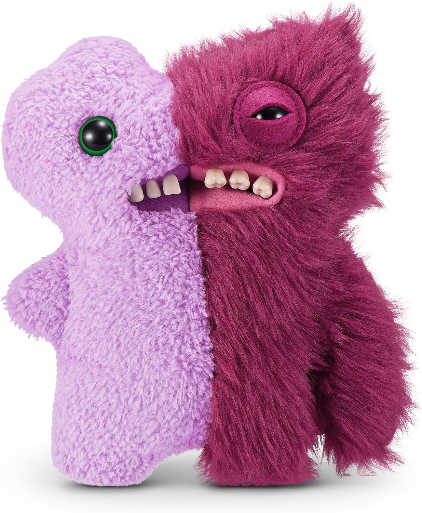
Gaptooth Weirdo
Monstruos InadaptadosEs un terrible duende del caos que vive para las travesuras y el caos, así que no te dejes engañar por el ojo abierto, el pelaje espnjoso y la sonrisa llena de dientes.

Mr Screech
Monstruos InadaptadoUna mezcla de colores drásticos de un Fuggler, vive para crear caos. No te metas en el asunto de, bueno, casi todo el mundo.
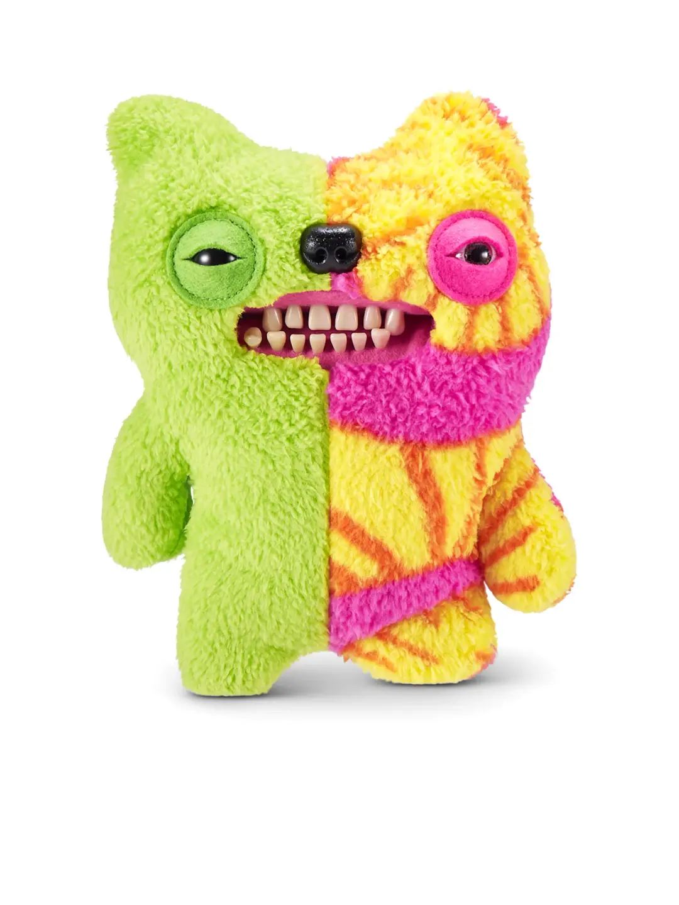
Munch Tooth
Monstruos InadaptadoNo te dejes llevar por su cansancio y ojos entrecerrados: está listo, dispuesto y, por desgracia, capaz de hacer un gran desastre.
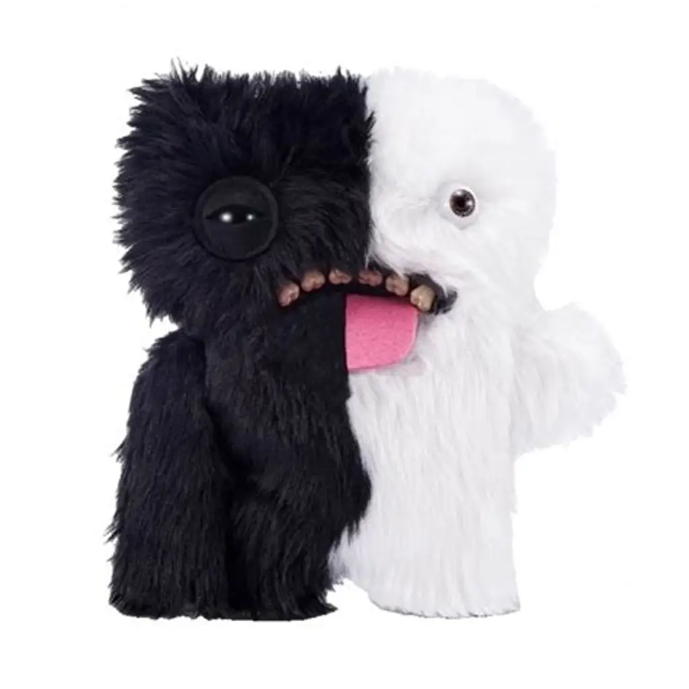
Wide Eyed Boogah
Monstruos InadaptadoEs una mezcla de dos Fugglers salvajes y peludos. Y por si eso no fuera lo suficientemente feo, está sacando su enorme lengua
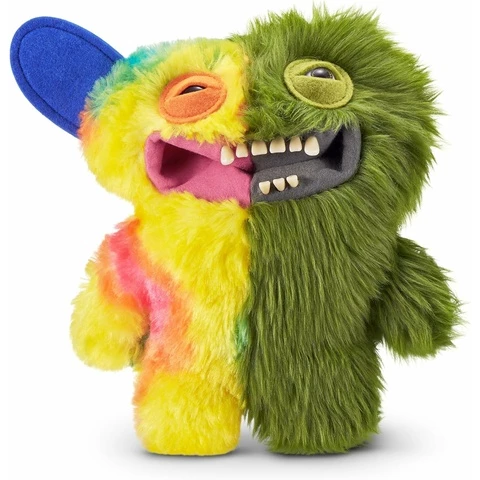
Grinneroo McGoo
Monstruos InadaptadoEs una especie de Fuggler verde enfermizo mezclado con un desastre multicolor, ¡y ahí es donde empieza el caos! Podría ser perfectamente el amigo de tus sueños.
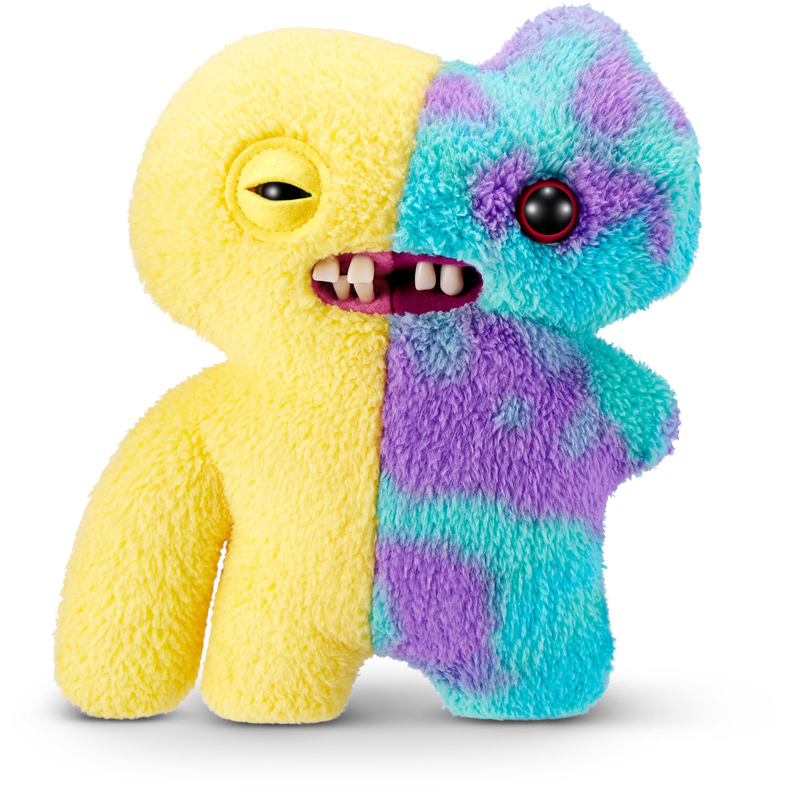
Squidgetooth McGoo
Monstruos InadaptadoUno de los monstruos Inadaptados más coloridos, este Fuggler tiene ojos desparejados y una ridícula "sonrisa" de separación con otra. P
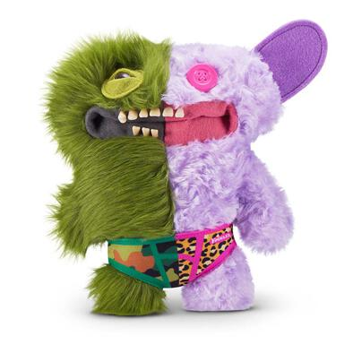
Captain Undergrin
Monstruos InadaptadoUna visión realmente horrible de contemplar, este enfermizo Fuggler verde y lila tiene ojos desparejados que te mirarán fijamente al alma
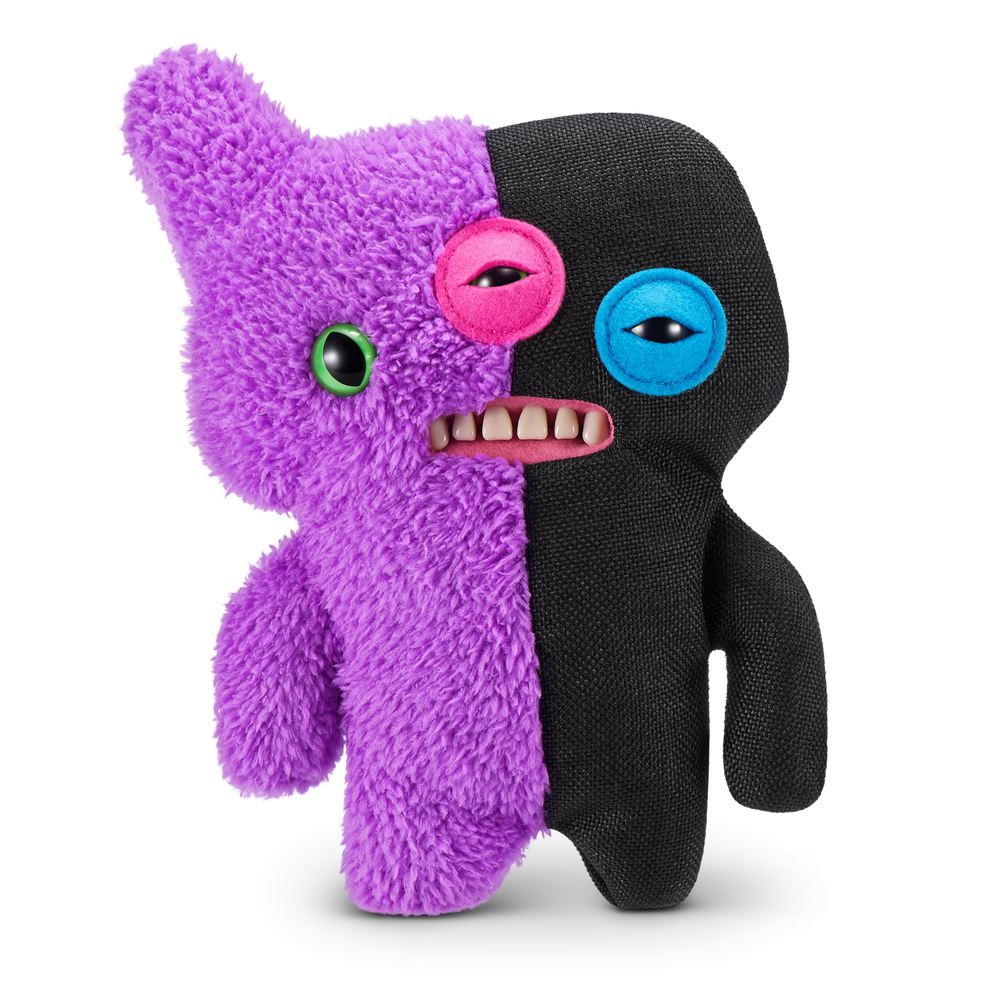
Reekalien
Monstruos InadaptadoEste Fuggler morado y negro está esperando para desatar el caos en tu hogar.
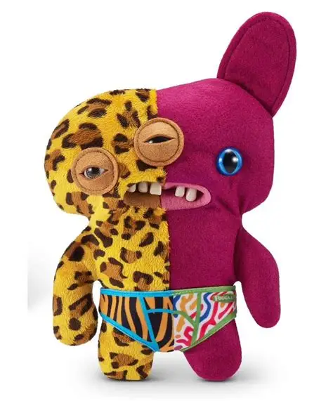
Annoyed-O
Monstruos InadaptadoUna visión realmente grotesca, no es de extrañar que quiera desquitarse con todos los que están cerca.
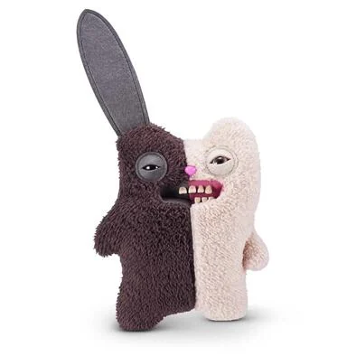
Rabid Tooth
Monstruos InadaptadoEstos monstruos inadaptados viven para el caos y les encanta hacer un desastre en tu día.
Mascotas Feas
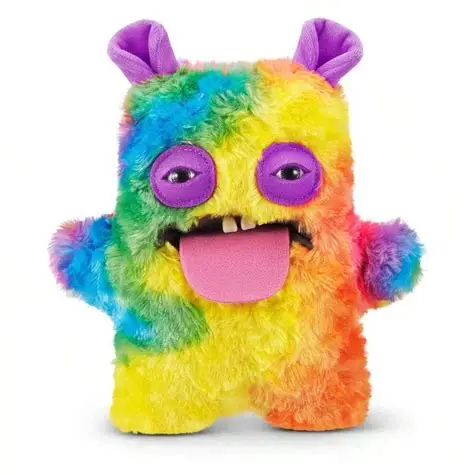
Cheeky Chonky
Mascotas Feas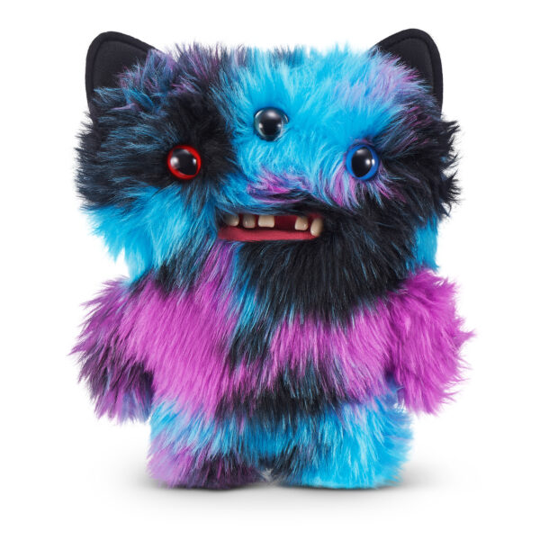
Reek-O
Mascotas FeasEste Fuggler trae caos y malestar dondequiera que encuentra una bandeja de arena. Y si no encuentra una bandeja de arena, hará su trabajo igualmente.
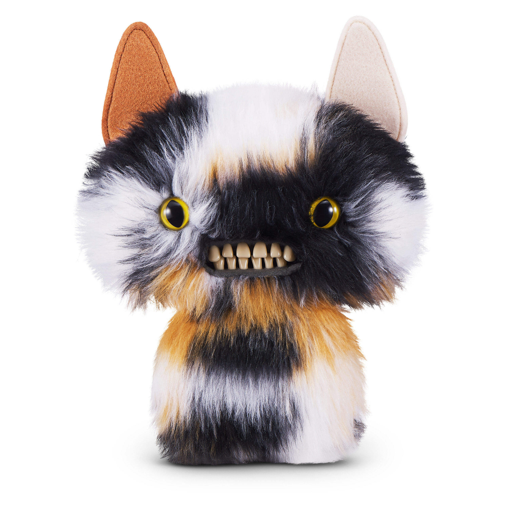
Cheezee
Mascotas FeasUn felino demoníaco que no desea nada más que arrancar tus cortinas, ensuciar la alfombra y rascar.
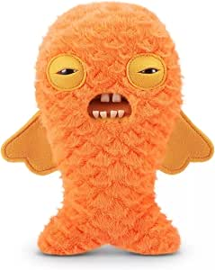
Cod Father
Mascotas FeasEste pez asqueroso huele a, bueno, un pez. Solo que peor. Compra este y mira qué tal. Si no funciona, bueno, muchos más peces en el mar.
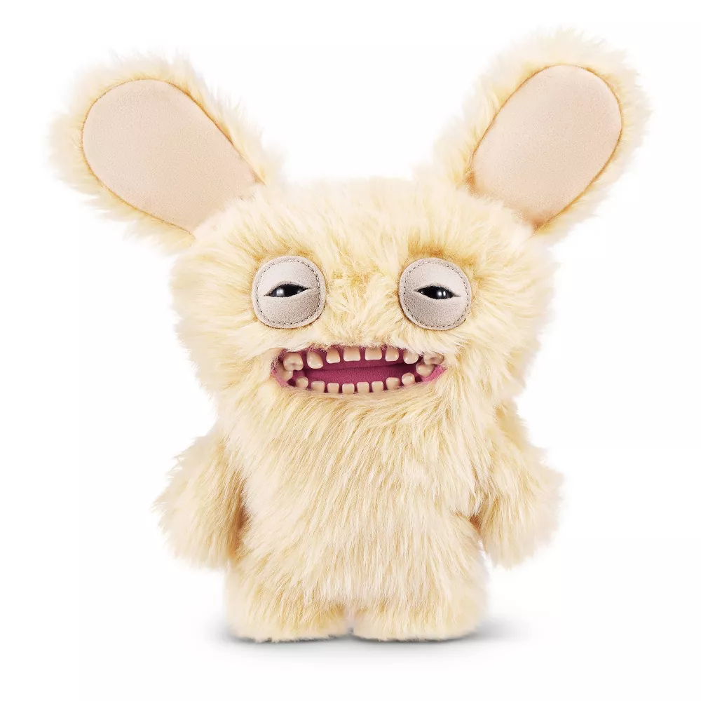
Mr Buttons
Mascotas FeasUn lunático y saltarín, este Fuggler tiene la energía de un golden retriever que canaliza en un caos malicioso
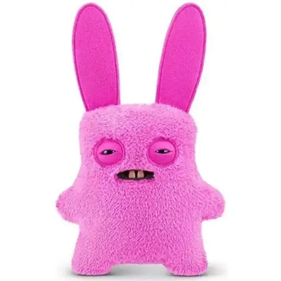
Rabid Rabbit
Mascotas FeasPuede que tenga orejas grandes y caídas, pero hay algo en sus ojos pequeños y dientes torcidos que no encaja bien.
El Señor De Los Anillos
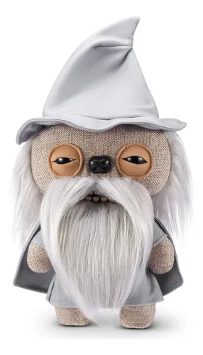
Gandalf
Coleccion EspecialNo te dejes engañar por la barba postiza. Este Fuggler te enviará a desventuras en cualquier momento.

Gollum
Coleccion EspecialSí, con ropa marchita y el pelo ralado, es el guía perfecto para guiarte... Extraviado.
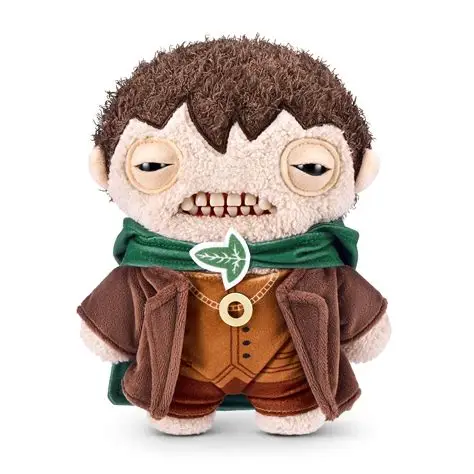
Frodo
Coleccion EspecialGremlins
Raya
Coleccion EspecialEste monstruo pretende causar estragos, pero necesita mantenerse alejado de la luz brillante para continuar su reinado de terror.
Gizmo
Coleccion EspecialEste monstruo es aún más descarado: aún no está transformado, pero junto a sus amigos monstruos causará problemas igual que los propios Gremlins.
DC
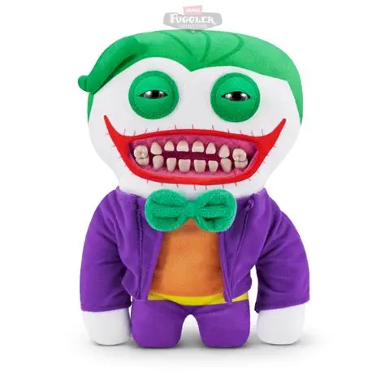
Joker
Coleccion EspecialYa sea que esté contando bromas o cometiendo crímenes, querrás vigilar a este monstruo antes de convertirte en su próximo objetivo.
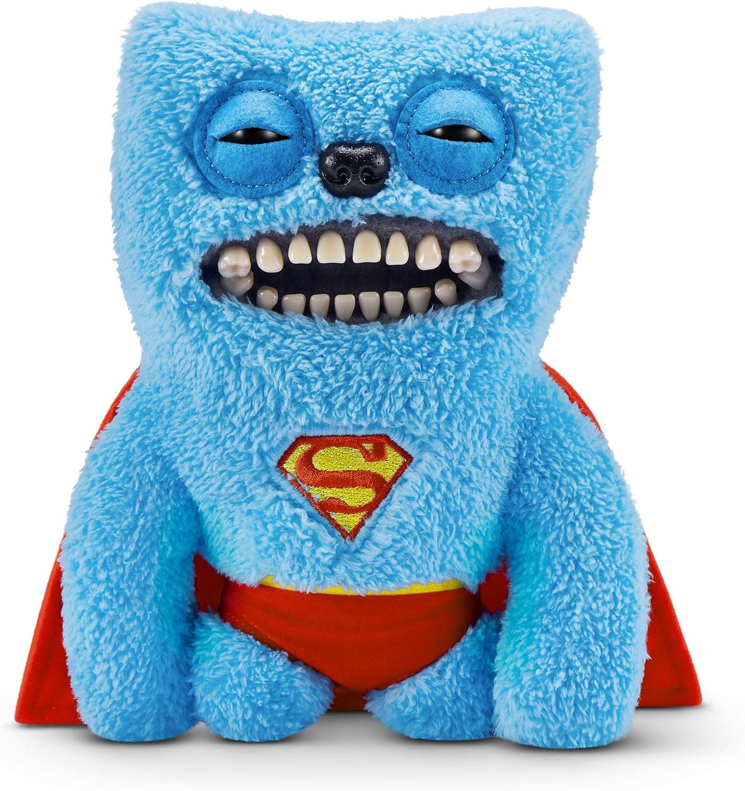
Superman
Coleccion EspecialEste monstruo no es exactamente el superhéroe que conocemos y amamos, ¡es un poco más travieso! Mantén la vista en el cielo, nunca sabes dónde puedes ver a este sinvergüenza ni qué trucos va a hacer.
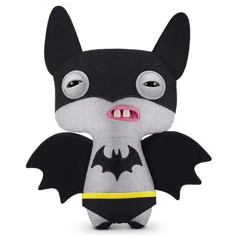
Batman
Coleccion EspecialA diferencia del Caballero Oscuro, este Fuggler se toma a sí mismo un poco menos en serio.
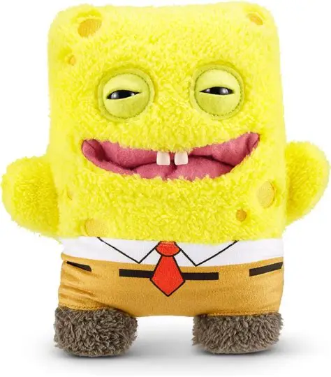
Harley Quinn
Coleccion EspecialAl igual que la Princesa Payasada del Crimen, este monstruo se encontrará haciendo bromas y haciendo travesuras por toda la ciudad.
Bob Esponja
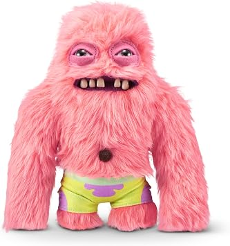
Patricio
Coleccion EspecialEsta ingenua estrella de mar rosa tiene un apetito insaciable por las travesuras.
Bob Esponja
Coleccion EspecialEsta esponja amarilla extrovertida y optimista tiene aptitud para el caos. Crea caos en los lugares más inesperados.